Revised native Garage panel
Equipped, unowned preview and owned preview, using isolated red striped-car records. These are actual Godot captures.
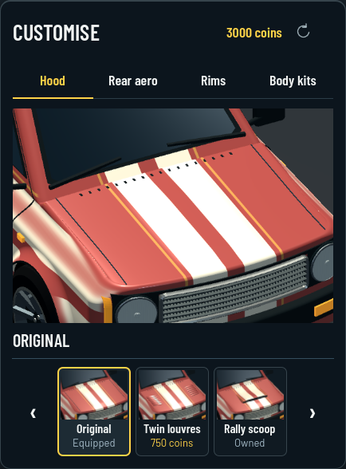
Equipped · one status caption, no disabled action button.
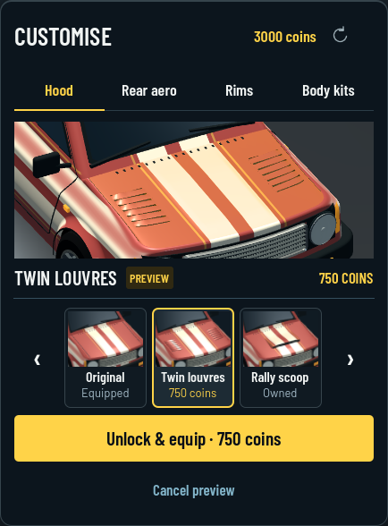
Unowned preview · exact price and explicit unlock/equip.
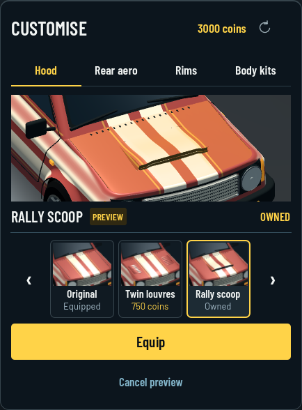
Owned preview · explicit Equip and Cancel preview.
Wide panel with four choices
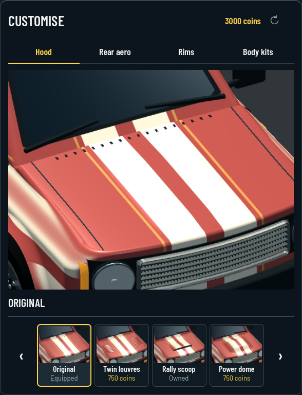
1720×900 · same paint and camera direction across choices.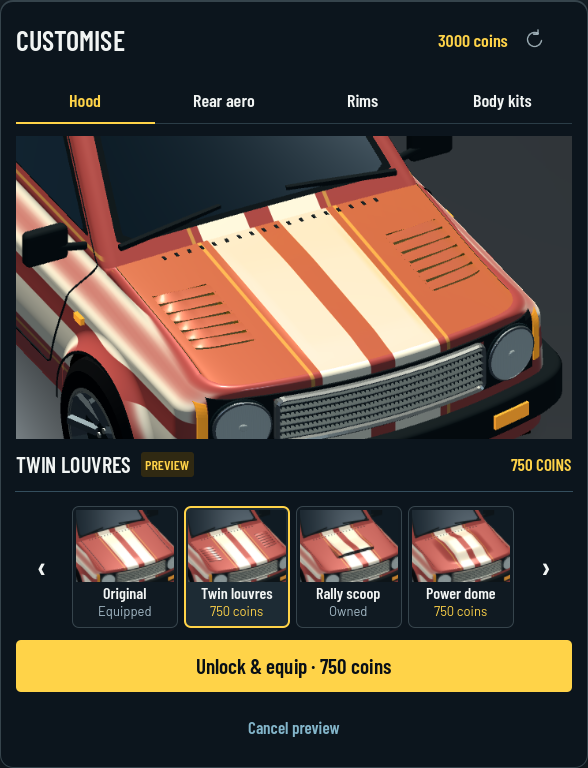
Full-width gold action appears while previewing.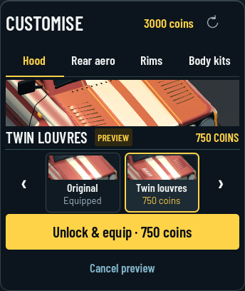
960×540 · image, item name, choices and actions fit.Full App: before / after
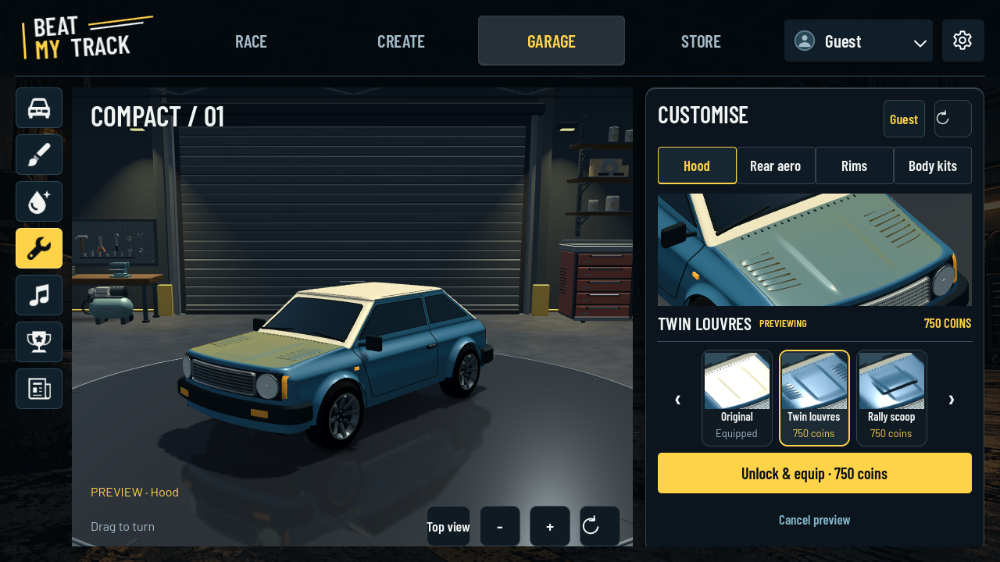
Task-start panel. The separately restored Workshop navigation is preserved.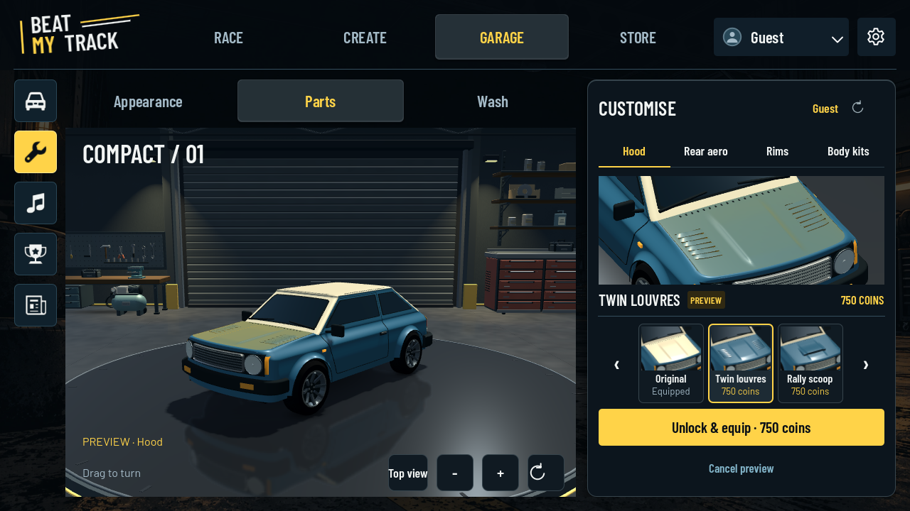
Updated panel using the actual retained car and camera.All part categories
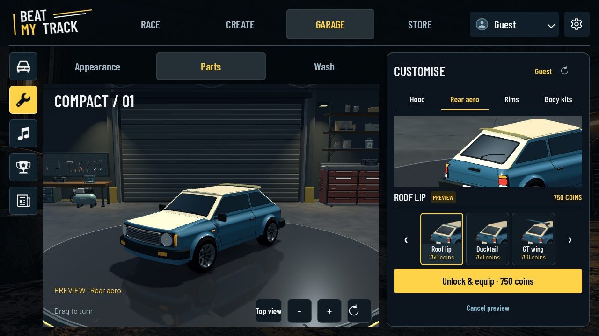
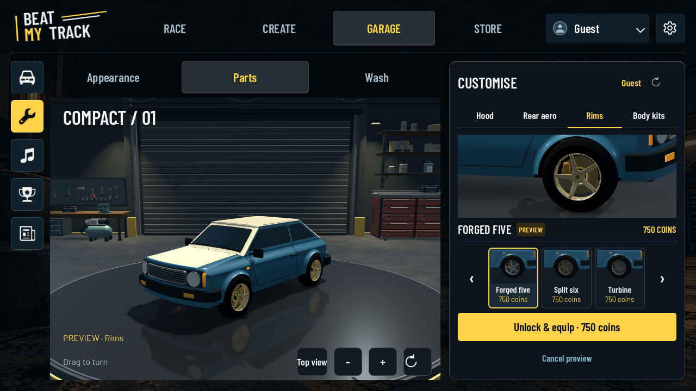
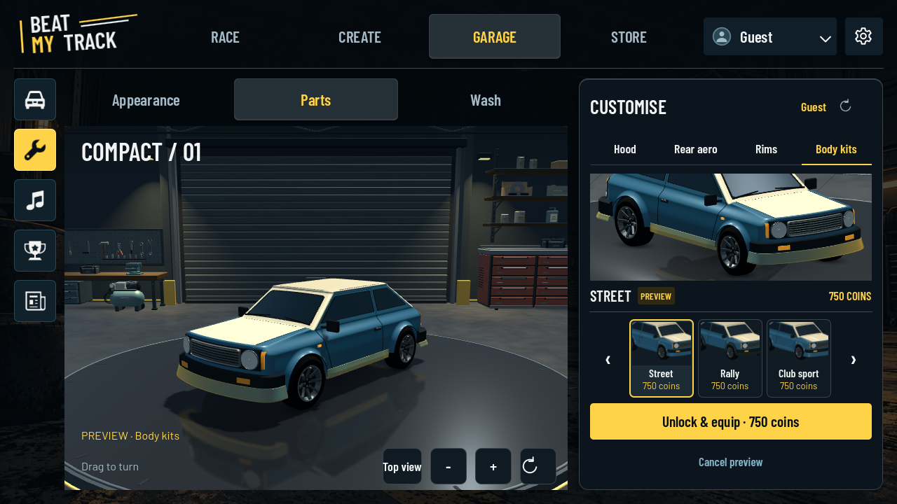
Desktop Mobile / Vulkan
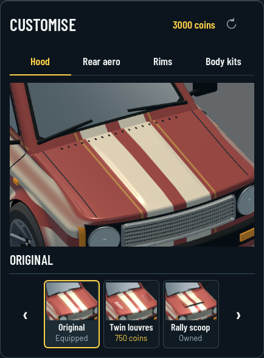
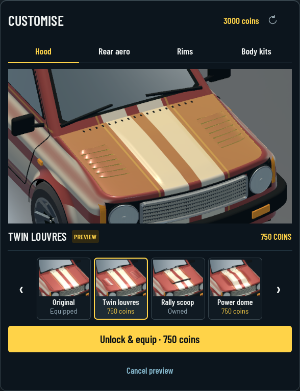
Actual commands, results, hashes and limitations · Scoped checkpoint
Client reload and owner visual/touch acceptance remain. No physical-device test or real purchase was performed.